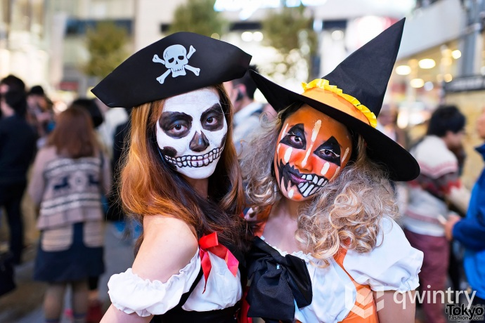

Як відсвяткувати Хелловін - ідеї, прикраси, частування, наряди
Хеллоуїн традиційно святкується в ніч з 31 жовтня на 1 листопада напередодні Дня Всіх Святих. Історія свята сягає кельтським традиціям, і в часи язичництва він мав лише сільськогосподарське і сезонне значення, однак з прийняттям християнства хелловін став міцно асоціюватися з усім надприродним, жахливим, потойбічним.
Декор
Щоб якимось чином надати своїй оселі вигляду of a haunted mansion (тобто будинку з привидами) вам буде потрібно всього-на-всього трохи марлі або бинтів, червона фарба та флізелін, а також трошки фантазії. А я вам підкину ще декілька цікавих ідей.
- Можна зробити «справжню» павутину. Для цього вам знадобиться лише чорна шерстяна нитка. Дуже ефектно буде виглядати у павутинці і павучок. Якщо ж за павутиною поставити настільну лампу чи мерехтливий ліхтарик – ефект присутності забезпечено.
- Також можна використати декілька невеличких яблук замість підсвічників, заздалегідь вирізавши серцевину. Але переконайтеся, що яблука достатньо стійкі і не перевертаються під вагою свічки.
- Щоб прикрасити святковий стіл можна використати широкі тарілки або вази заповнені сухими квітами та листям та висохлими гілочками. Обв’яжіть кожну вазочку чорною стрічкою – і стіл до Хеловіну готовий.
Костюм
Тут можна розгулятися не на жарт. Напевно, не варто розповідати, що найбільш традиційними вважаються костюми всілякої чортівні – вампірів, відьом, чортів, чорних котів, мумій тощо. Ким вам хочеться побути цього року? На це питання може відповісти лише ваша власна уява, вона ж і підкаже, з чого створити костюм. Проте можу дати цікаву пораду нашим модницям: зробіть собі хеловінський манікюр - для цього потрібно лише розмалювати нігті чорним та помаранчевим лаками.
Частування на Хеллоуїн
Купіть мармеладних черв'яків, розкладіть у великі тарілки і розставте їх по всій кімнаті. Також можна зробити "червиві яблучка" - просто купіть великі яблука, акуратно ножем виріжте отвір, у нього - желейного черв'ячка.Гарною ідеєю частування на Хеллоуїн будуть звичайні страви, тільки оформлені в оригінальному хелловінському стилі. Так, можна спекти печиво глазур'ю зробити прикраси у вигляді привидів і різної нечисті. Якщо плануєте нагодувати гостей більш ґрунтовно, оригінально виглядатимуть страви, приготовлені або подані на стіл в гарбузі.